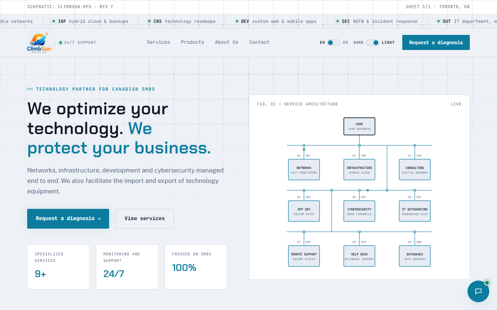

Andrés Felipe Tovar Sandoval
Desarrollo backend en C#, administración de bases de datos Oracle/SQL Server e integración de sistemas empresariales. Enfocado en soluciones eficientes, escalables y bien documentadas.
Sobre mí
Ingeniero de Sistemas de la Universidad del Norte (2024) con más de 4 años de experiencia en bases de datos Oracle y SQL Server, desarrollo backend en C# e integración de sistemas empresariales. Experto en servicios web, triggers, jobs y esquemas optimizados. Con amplio conocimiento en el flujo de aplicaciones de mantenimiento de activos, abarcando inventarios, mantenimiento preventivo y correctivo, compras y personal. Destacado por integrar plataformas de mantenimiento con SAP, mejorando la sincronización de datos y reduciendo tareas manuales.
Habilidades técnicas
Bases de datos
Lenguajes
Herramientas
Metodologías & nube
Experiencia profesional
Ingeniero de Sistemas y Especialista en Soporte de Aplicaciones
Cosistemas Ltda.
- Integración con SAP: diseño e implementación de una integración backend entre una aplicación de mantenimiento de activos y SAP, con sincronización en tiempo real de órdenes de trabajo, materiales y registros de mantenimiento. Resultado: reducción del 90% en tareas manuales y mayor trazabilidad.
- Administración de bases de datos: gestión de bases Oracle y SQL Server, creación y optimización de esquemas, procedimientos almacenados, triggers y jobs automatizados. Resultado: mejora del rendimiento de consultas en un 70%.
- Desarrollo de servicios web: servicios SOAP y REST en C# para comunicación entre sistemas internos y externos, aumentando la interoperabilidad y automatización de procesos.
- Soporte funcional y técnico: soporte a usuarios y áreas operativas en mantenimiento de activos, inventarios, compras y personal, garantizando la continuidad del negocio.
Proyectos

Sitio web corporativoClimbSun Digital
Desarrollo y mantenimiento del sitio web de ClimbSun Digital, empresa de servicios de TI para pymes canadienses. Migración del hosting a un flujo con despliegue automático desde GitHub, panel de administración (servicios, productos, contenido) y formulario de contacto con notificaciones por correo.
Stack: React, Vite, Tailwind CSS, PocketBase
Ver sitio en vivo ↗Integración SAP (LBApps)
Diseño y desarrollo de una integración entre el sistema de mantenimiento de activos y SAP para Triple A, compuesta por un servicio de Windows programado y un servicio web SOAP para el consumo y publicación de documentos XML (creación de ítems, órdenes de trabajo, materiales e inventario) contra una base de datos Oracle.
Stack: C#, .NET, Windows Service, Web Service (SOAP/ASMX), Oracle, XML
Servicio de integración SQL → XML
Servicio de Windows en C# desarrollado para Somos (Bogotá), que ejecuta consultas programadas contra SQL Server y genera automáticamente los archivos XML de intercambio a partir de los resultados, para alimentar procesos de integración de datos.
Stack: C#, .NET, Windows Service, SQL Server, XML
Certificaciones
Educación
¿Tienes un proyecto en mente?
Disponible para trabajos freelance de desarrollo backend, integración de sistemas y automatización de procesos.